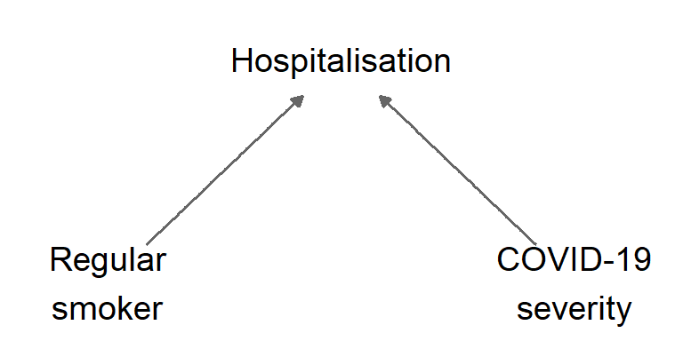
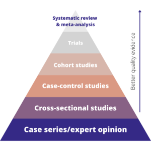
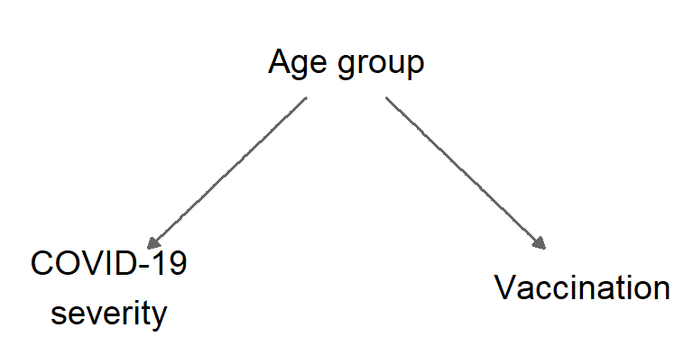

Part VIII: Study designs and biases
Bias
Confounding
This is part eight of a series on statistical methods for analysing time-to-event, or “survival” data.
In this final post of this series I’ll describe a number of observational study designs and several potential sources of bias common to these studies.
Observational study designs
Observational studies are common in epidemiology and a valuable resource for understanding infectious disease burden. Several different types of observational study design exist, which may be more or less suitable depending on the research question, the need to control for specific biases, and the feasibility of data collection.

Table 1 shows a \(2 \times 2\) table which may be used to group participants in observational studies and to inform the calculation of standard statistical measures.
| Outcome | |||
|---|---|---|---|
| Yes | No | ||
| Exposure | Yes | \(A\) | \(B\) |
| No | \(C\) | \(D\) |
Table 1: A \(2 \times 2\) table of outcomes and exposures.
Cross-sectional studies
Cross-sectional studies may be used to assess:
- the prevalence of an outcome, defined as: \((A+C)/(A+B+C+D)\)
- the prevalence of various different exposures, defined as: \((A+B)/(A+B+C+D)\)
within a population. They provide a snapshot of the population at a single point in time and can be relatively straightforward to conduct using surveillance data.
Case-control studies
Case-control studies are used to investigate the effects of specific exposures on an outcome. In these studies the outcome of interest has already occurred, individuals who have experienced the outcome are termed “cases”, and are compared to individuals without the outcome, known as “controls”. The odds of being exposed are compared in cases vs. controls via the odds ratio: \[\frac{AD}{BC}\]
Test-negative case-control studies
Test-negative case-control studies are a sub-type of case-control study. These studies aim to minimise bias specifically as a result of test-seeking behaviour by selecting only individuals who test for a disease. As for case-control studies, the cases are individuals who test positive, controls are those who test negative, and again the odds of being exposed are compared between cases and controls.
Cohort studies
In cohort studies participants are selected based on their exposure status and followed up over time. The incidence of the outcome of interest is compared between individuals with and without the exposure using the relative risk:
\[ \frac{A/(A+B)}{C/(C+D)} \]
Biases in observational studies
Bias can be defined as: any process at any stage of inference which tends to produce results or conclusions that differ systematically from the truth. All of the observational study designs described above can include potential sources of bias, which are often grouped into three broad types: information bias, collider bias, and confounding.
Information bias
Information, or measurement, bias arises due to inaccuracies in data and may be induced by errors or missing information in either the outcome or exposure variables, for example, incorrect coding of a diagnosis. Information bias can be mitigated through careful study design and data collection mechanisms, these could include: double entry of data, and linking information across different systems for validation.
Collider bias
Collider bias, or selection bias, occurs when individuals are selected into an analysis by conditioning on a common “collider” variable (a variable which is influenced by two other variables).
Figure 2 shows an example of collider bias: people who are regular smokers and people at high risk of severe COVID-19 illness are both more likely to be admitted to hospital. By conditioning on hospitalisation a distorted association between smoking and COVID-19 mortality could be induced, and this bias may occur in either a positive or negative direction. For example: a negative association between smoking and COVID-19 severity was reported by more than one early risk-factor study for COVID-19, with a review concluding this result may have been a result of collider bias.
Collider bias is most easily avoided by not conditioning on the collider, but this may be impractical depending on the nature of data collection. In the context of COVID-19, Griffith et al. have suggested several methods for assessing the sensitivity of model results to collider bias, such as inverse probability weighting. Where information is available, the extent of the bias can also be examined by comparing the profile of selected individuals to the wider population of interest, e.g. whether hospitalised individuals tend to be older or more likely to have comorbidities as compared to the general population.
Confounding
Confounding is related to collider bias, but occurs by not conditioning on an explanatory variable. As a result confounding is sometimes termed latent variable bias. Confounding introduces a “backdoor path”, an additional source of association between the explanatory variable and the outcome, so the measured association cannot be interpreted as a causal effect.
An example of confounding is shown in the causal diagram in Figure 3: during vaccine roll-out older people were more likely to receive a COVID-19 vaccine, but also more likely to experience severe COVID-19. If age group is not adjusted for then a distorted association between vaccination and COVID-19 severity may be induced. Confounding can be avoided by ensuring that factors that might be associated with the outcome are measured and adjusted for.

Epidemic phase bias
Epidemic phase bias occurs in studies with time-varying incidence of infection. This bias is induced by a relationship between the time from infection to symptom onset and an individual’s eventual outcome, e.g. those who go on to die may experience a more rapid onset of symptoms following infection, an average of \(c\) days sooner. Since estimates must be conditioned on the observed symptom onset date, rather than the unobserved infection date, this relationship can introduce bias into results when an epidemic is in a mode of growth or decline.
Epidemic phase bias is corrected by “shifting” the symptom onset date among those who experience the more severe outcome to be \(c\) days later, so that the time from infection to symptom onset is uncorrelated with the outcome (the time-to-event of interest remains the same for both outcomes.) As the true value of \(c\) is typically unknown, sensitivity analysis with differing values of \(c\) can be used to assess the susceptibility of results to this bias.
NoteKey takeaways
- Different observational study designs (cross-sectional, case-control, cohort) are suited to different research questions and data collection scenarios
- Cross-sectional studies provide snapshots of prevalence at a single time point, while cohort studies follow exposure groups over time
- Case-control studies compare past exposures between those with and without outcomes, using odds ratios to measure associations
- Three main types of bias affect observational studies: information bias (measurement errors), collider bias (selection effects), and confounding (unmeasured common causes)
- Epidemic phase bias is specific to infectious disease studies with time-varying incidence and rapid symptom onset
References
- Baker C. Epidemiology: Study Designs. Blacksburg; 2023.
- Bodicoat D. Types of Study Designs in Health Research: The Evidence Hierarchy.
- Griffith GJ, Morris TT, Tudball MJ, et al. Collider bias undermines our understanding of COVID-19 disease risk and severity. Nature Communications. 11(1),5749.
- Hernán MA, Robins JM. Causal Inference: What If. CRC Press; 2023, 312 pp.
- Seaman SR, Nyberg T, Overton C, Pascall DJ, et al. Adjusting for time of infection or positive test when estimating the risk of a post-infection outcome in an epidemic. Statistical Methods in Medical Research. 2022;31(10):1942-58.
- Wenzl T. Smoking and COVID-19 - A review of studies suggesting a protective effect of smoking against COVID-19. Publications Office. 2020.
- Woodward M. Epidemiology: Study Design and Data Analysis. Chapman & Hall/CRC Texts in Statistical Science; 2013.